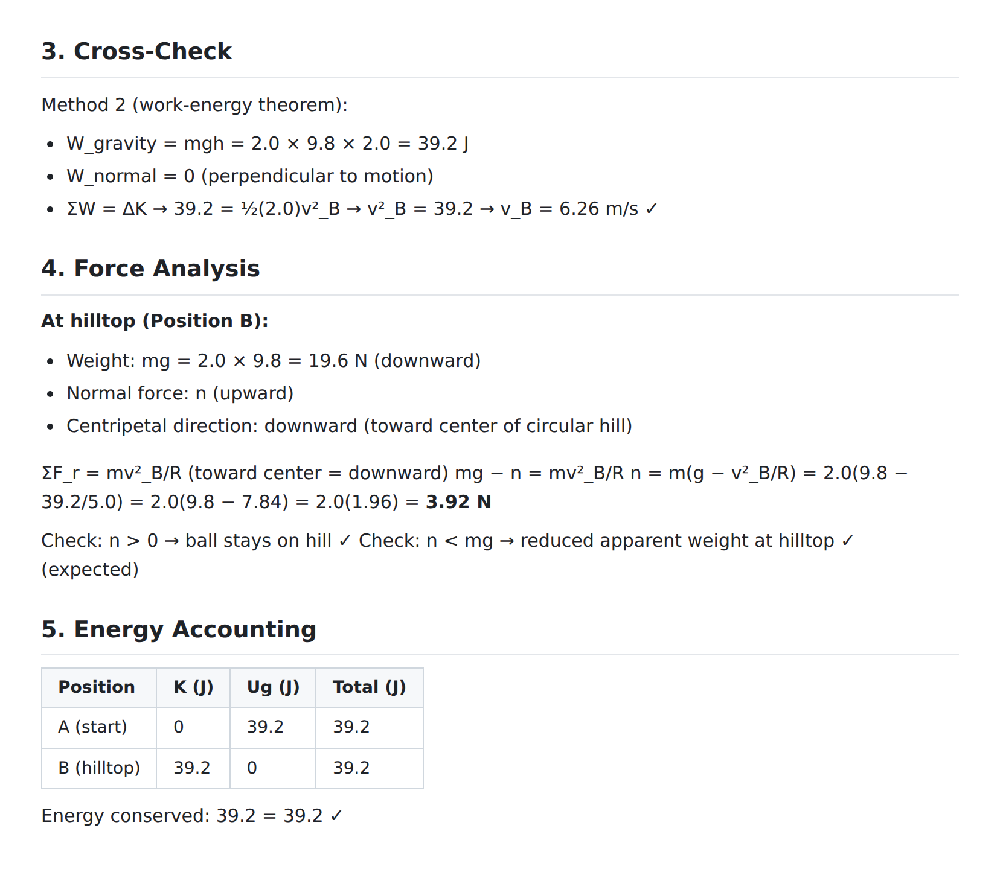
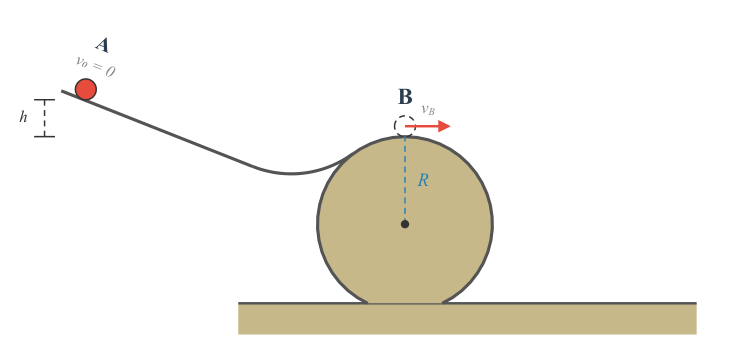
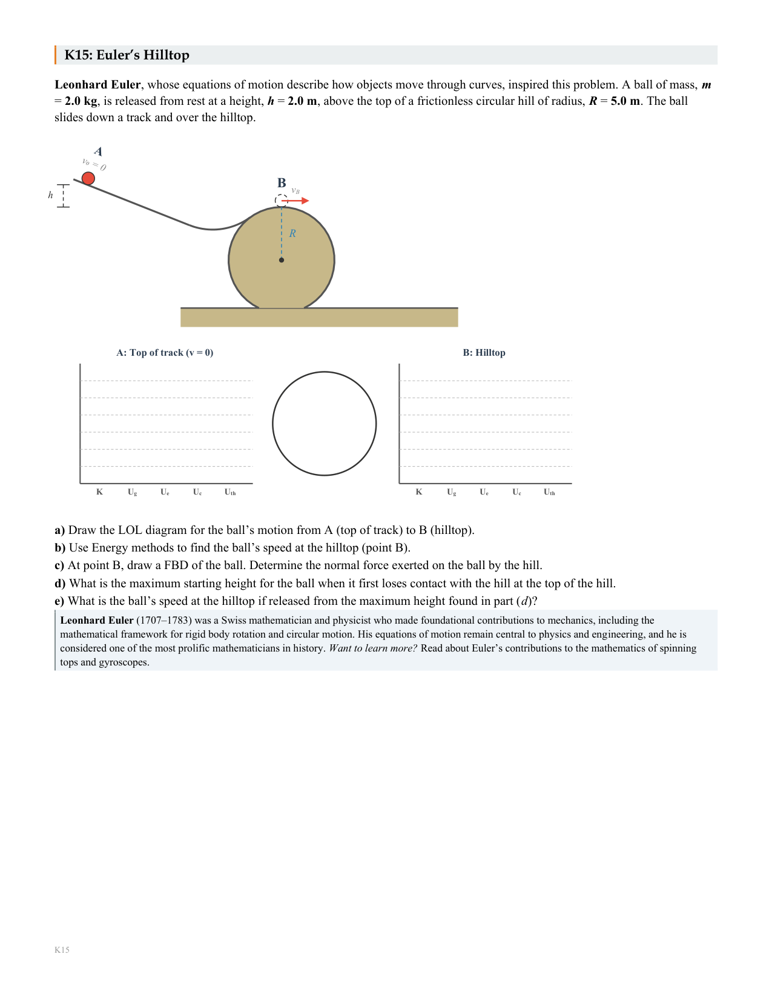
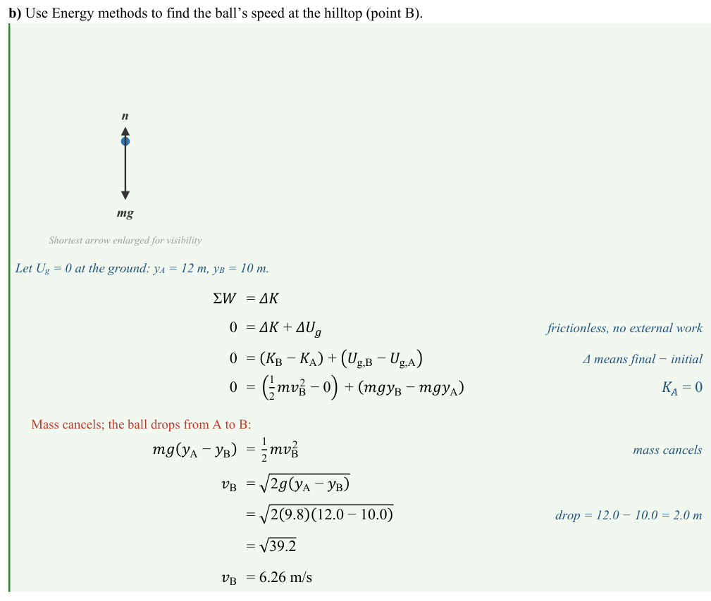
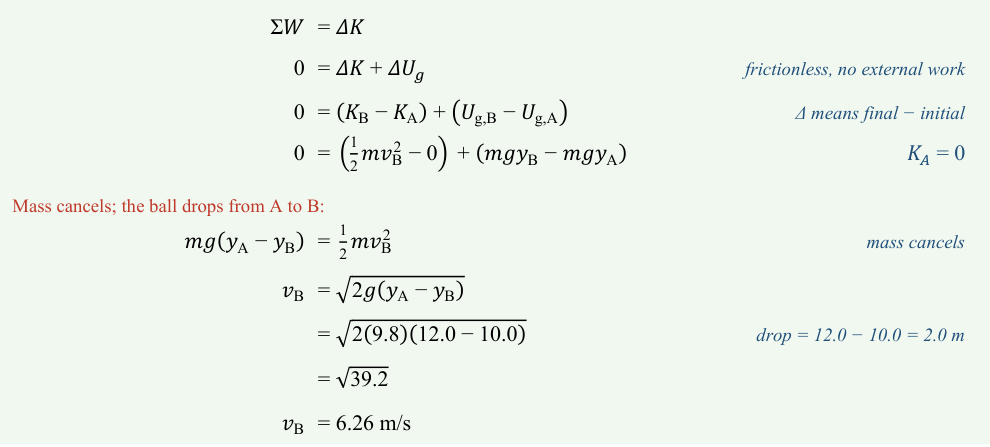
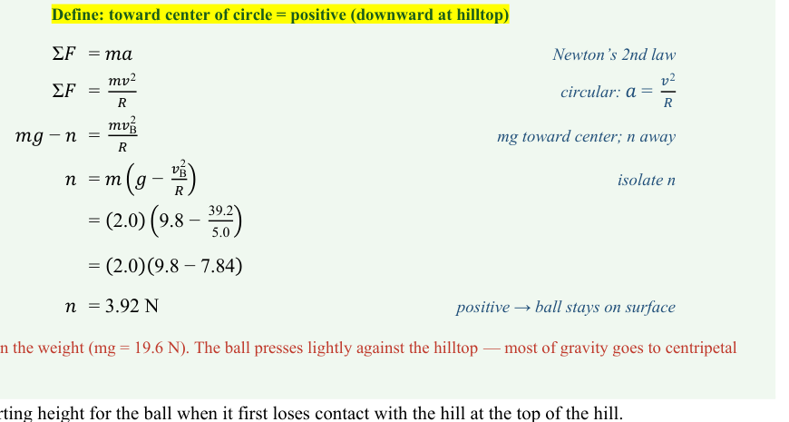
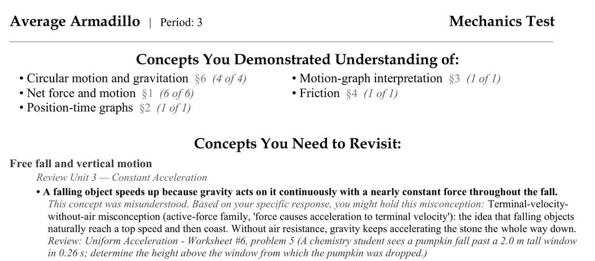
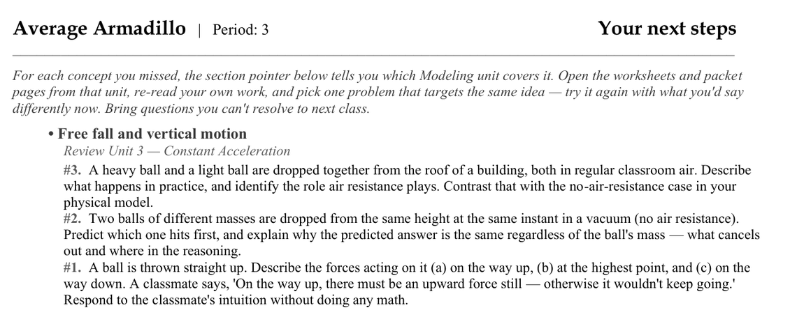

The story
One problem’s life, end to end.
Follow a single physics problem from a row in the bank all the way to grade-free feedback on a student’s desk. It is the same instinct the whole system is built on: author once, verify relentlessly, hand the student a description of their thinking instead of a score.
Every figure in a highlighted box is harvested live from the repository with a source and a verified date — hover to read them. A figure is hand-pinned, not yet wired to a machine source.

$ build energy-K015 --draft BLOCKED check_solution_structure part (a) must be the LOL energy diagram BLOCKED check_prescriptive_questions a bare formula leaked into a question stem BLOCKED check_orphan_measurement a labeled height has no drawn bar BLOCKED check_fbd_presence the force part has no free-body diagram build halted — fix the physics, then rebuild







-
It all starts with a simple idea
“Create an energy problem that combines circular motion and projectiles”
You give the system a single sentence. From there it researches the physics, works out a concrete situation that puts the concept on display, and anchors the whole problem to a real scientist whose work it echoes — here Euler’s Hilltop, after Leonhard Euler, whose equations of motion describe the very curve the ball crests — with a short biography that ships right on the printed page.
That finished problem lands as one row among many — 413 of them — feeding a bank of 51 free-response and 72 multiple-choice problems, 50 in the energy unit alone.
-
Physics before pixels
It has to pass the brief first
Before a diagram is ever drawn, the problem must clear a physics design brief: geometry, energy accounting, every claim cross-checked. The brief is the first of three independent checks behind every finished problem — the design brief here, the live simulation, and formal verification of the engine itself. The physics is the first gate, not an afterthought.
It is one small addition to a repository grown across 1,705 commits since 2026-03-19 — 1,617,947 lines of first-party code.
-
The gauntlet
Then the build tries to stop it
43 build-blocking gates stand between a draft and a shippable page: 25 data validators, 12 git-hook checks, and 6 static lints, backed by 10 standing invariants.
Here is what the gauntlet actually said to an early draft of the hilltop problem — four real gates, four real refusals.
-
The diagram engine
One library draws every scene
Clear the gauntlet and the diagram engine takes over — the shared library that draws the track, the curved crest, the height bar, the velocity arrow. Fix a label once and the next forty problems inherit the fix.
It is one node in an import graph of 433 modules wired by 1,144 edges, 76 of them shared library files.
-
The same problem, alive
Not only a page — a simulation
The same problem — Euler’s Hilltop, the one you just watched clear the gauntlet — runs live: not a picture of the motion but the real engine, solving the worksheet’s own diagram in your browser. It begins at rest at A, exactly as the printed page will set it up, and runs the whole story: down the ramp, through the valley, up over the crest. The energy bars trade kinetic for gravitational as the ball climbs. It crests, the normal force dies, and it leaves the surface — no code says when. 104 scenarios are registered and 39 weld their physics to an independent check; this run is held to the same energy books, and the exhibit page opens the welded fixture itself.
Open the sim exhibit -
The printed page
What lands on the desk
Title, scene, energy bar chart, lettered questions, a worked-key-quality solution, a scientist’s story — one problem, one page, print-ready. No template surgery, no hand-placed labels.
-
The solution guide
Every step worked, every step annotated
The matching solution guide ships with every set — the same pipeline that typeset the problem typesets the full derivation: one continuous aligned block from ΣW = ΔK to the number, equals signs aligned, with margin annotations explaining exactly the steps students find hardest.
-
Parallel forms fan out
One problem becomes many
The same physics generates parallel forms — different numbers, identical concept — so a class can work in groups without copying, and a make-up form is a command away instead of an afternoon.
-
Scanned back in
Paper goes straight back into the pipeline
Multiple-choice answers come back on paper and re-enter the system without a human retyping a single response — scanned, read, and matched to the key. Free-response work is the next frontier: the grader that will feed it into this same pipeline is designed, not yet in the loop.
-
Graded against the worked key
The same key the engine produced
Grading runs against the very solution the engine generated — the normal-force step, the maximum-height limit, all of it. The answer key and the grader are never allowed to drift apart.
-
Feedback, not a grade
Personalized Narrative Feedback
The report names four things, in the student’s own terms. It marks the learning goals their work has already met, and the ones not yet shown to be mastered. For each miss it takes the specific misunderstanding behind their answer and re-explains, from their point of view, how the physics actually works. It points them back to the problems from class the missed one is most like. And it hands them a few targeted questions to revisit that idea on their own terms — no score, no rank, no points, just the next move.
The persona shown here is a fictional demo — “Average Armadillo” — and no student data ever leaves the building.
-
How it stays correct
None of this is trusted on faith
39 problems weld their answer to an independent solver — 100% of the modelable set — and the wider engine is guarded by formal-verification passes across 831 functions, 641 property-checked, 581 against stated laws.
The formal-verification totals carry a †: read from the live index and hand-pinned until a machine source is wired in.